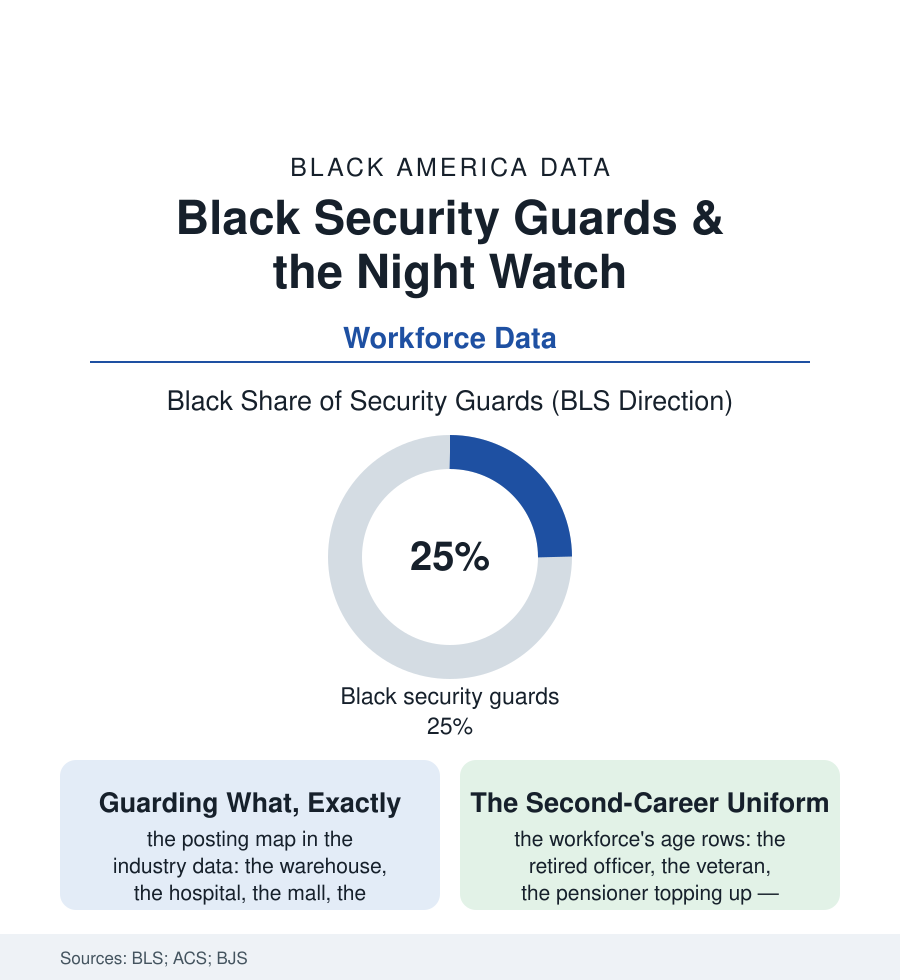

Black Employment
The Night Watch: Black Security Guards and the Guarded Economy
One security guard in four is Black — the uniform of the economy's night shift, guarding property in an industry built on low wages and the veteran's and retiree's second careers. The watch file.

Stand in any American lobby at midnight and the odds are one in four that the person awake in it — the guard at the desk, the badge and the radio and the logbook — is Black. Security work is one of the largest occupations in this book's workforce, and among its least examined: the uniform that signifies safety while its wearer negotiates the industry's wages and the night's risks. This article reads the watch file.
The Guarded Economy's Terms
The industry's structure is the contract's: the guard rarely works for the place he guards — the security firms' national rosters supplying the bodies to the warehouses, hospitals, malls, and gated entries of the client's map, the bill rate and the wage rate's spread the firm's margin, the wage itself hovering, in the BLS medians, at the service file's floor with a badge. The workforce's composition tells the labor market's sorting story in the age and history rows: the veterans (the military's guard force civilianized), the retired and the moonlighting officers of the law-enforcement file's margins, the second-career elders of the senior-employment rows, the young men of the neighborhood for whom the guard card — the state license's modest gate: the fingerprints, the fee, the clean-enough record of the screening file's own irony, the record that bars the applicant from guarding being substantially the record of having been guarded against — is the available uniform when the others are closed. The risk ledger is the file's sober core: the occupational-fatality and assault data place the guard among the more dangerous of the common jobs (the night, the cash, the confrontation at the door he is paid to hold and forbidden, usually, to arm for — the unarmed majority of the industry's rosters facing the public's worst hours with a radio), the hospital posting's violence rows and the retail posting's shrink wars filling the incident reports, the industry's training hours — in most states, a working week or less — standing in the policy data as the file's standing scandal: the least-trained uniform in the building, assigned its most volatile minutes.
The Union, the Post, and the Question
The counterweights are the era's: the security officers' union drives of the big cities — the SEIU campaigns that won, in the metros of this atlas, the wage floors and the health coverage the standalone post never carried, the 'stand for security' standard becoming, in the union metros' contracts, the industry's proof that the wage was a choice — and the professionalization counter-current (the hospital and corporate posts' credentialing, the armed and cleared tiers of the federal-contract map where the guard's wage doubles and the workforce's composition, in the clearance file's pattern, thins). Beneath the terms sits the file's unspoken question, which the posting map asks nightly: the guard at the gate of the subdivision, the desk of the tower, the door of the store in his own neighborhood — protecting property in an economy whose property file he has read from the outside, the uniform granting him authority over spaces his wages will not buy him into. The community's own verdict on the occupation is double, and the oral record holds both halves without flinching: the guard as the neighborhood's own (the watchman the elders trust, the church's parking-lot deacon in uniform) and the guard as the system's rented face, the tension lived by the worker himself across a single shift. The file closes with the night's arithmetic: the economy sleeps in shifts, and a quarter of the people it pays to stay awake are the people of this book — underpaid by the bill rate's design, undertrained by the license's, in the line of the door's danger nightly. The least the ledger can do is count them accurately, and it does: one in four, every night, on post.
Reading the Security Data
The watch file is the employment section's night shift: presence sold by the hour, protection implied, the wearer absorbing the risk the uniform advertises against. The BLS publishes the headcount. The logbook — signed hourly, in the guard's own hand, through the dark — publishes the rest. All night.
More in Black Employment
The Black Unemployment Rate: The Two-to-One Pattern
Black unemployment runs at roughly twice the White rate — 5.5 percent against 3.3 percent in annual averages — a ratio stable across five decades of federal data. How it is measured and why it persists.
Black Median Weekly Earnings: The 80-Cent Ratio
Black full-time workers earn a median of about $900 a week — roughly 80 cents for every dollar White workers earn. The BLS earnings data by group, gender, and occupation.
Black Labor Force Participation: Working at National Rates
Black labor force participation runs at roughly the national rate — and Black women participate at higher rates than White women. The BLS participation data.
Source: U.S. Bureau of Labor Statistics; Census ACS occupation data; Bureau of Justice Statistics private security data; Service Employees International Union research.